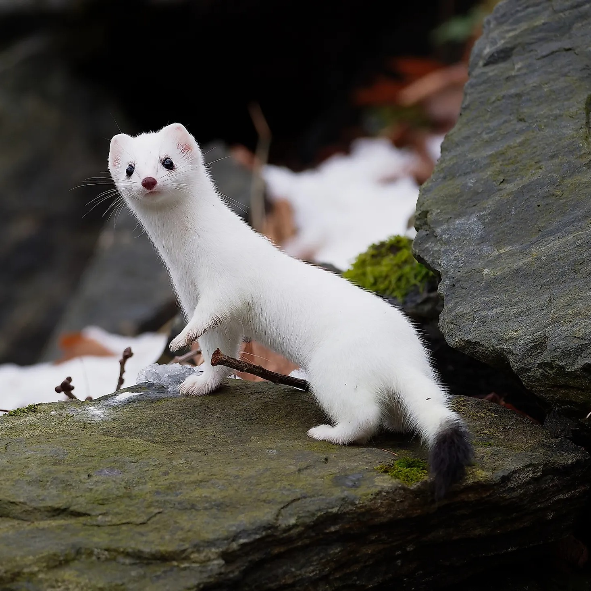
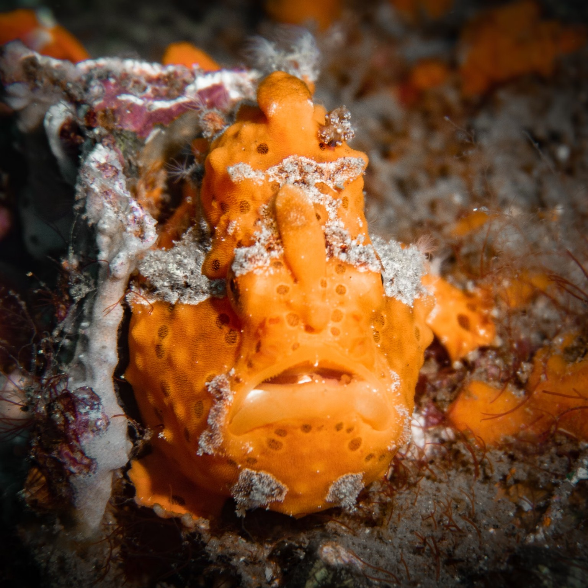
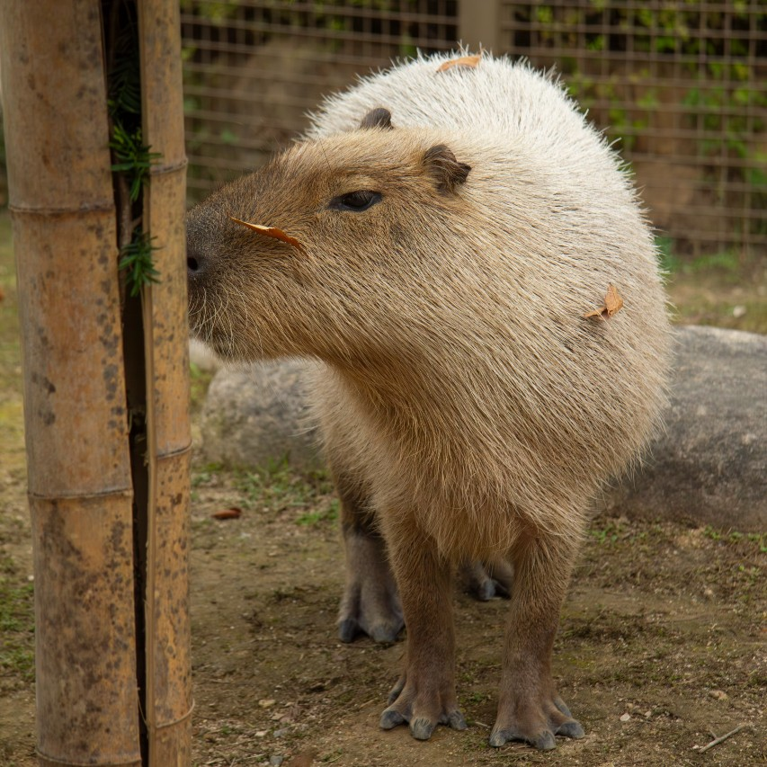
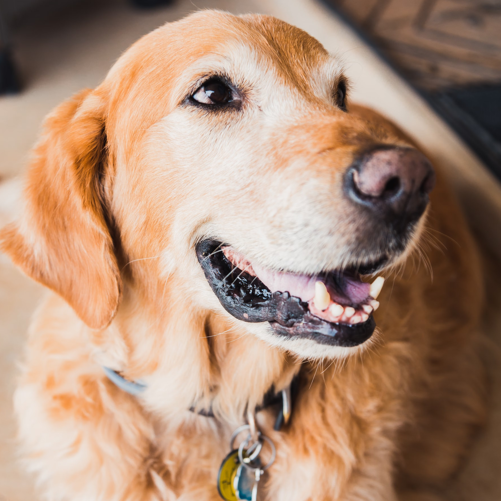

An introduction to the animal kingdom
The animal kingdom is a vast and diverse realm, beginning with majestic creatures like lions, often dubbed the "kings of the jungle." These powerful felines roam the savannas of Africa, embodying strength and social complexity within their pride structures. As apex predators, lions play a crucial role in maintaining the balance of their ecosystems, showcasing the intricate connections between species. From the fierce independence of solitary hunters to the cooperative dynamics of social groups, the animal kingdom reveals a tapestry of behaviors and adaptations that have evolved over millions of years. Exploring this kingdom offers a window into the rich variety of life that shares our planet, highlighting both the beauty and fragility of these remarkable creatures. Each animal, from the tiniest insect to the largest mammal, contributes to the intricate web of life, demonstrating the interdependence of all living beings.

Beyond the roaring lions, the animal kingdom encompasses an astounding array of creatures, each uniquely adapted to their environments. From the vibrant plumage of tropical birds to the elusive movements of the nocturnal owl, the diversity is striking. In the oceans, playful dolphins and graceful sea turtles navigate the waves, while on land, insects like butterflies and beetles showcase nature's artistry with their intricate patterns and colors. Reptiles like the formidable crocodile and the swift chameleon illustrate the wide range of survival strategies in this kingdom. Each species, whether a humble ant or a towering elephant, plays a vital role in its ecosystem, contributing to the intricate web of life that sustains our planet. As we delve deeper into the animal kingdom, we uncover stories of resilience, adaptation, and the delicate balance that governs all living things.
Our Star Animals
Wildlife conservation: Protecting Our Planet's Biodiversity
Wildlife conservation is essential for maintaining the health and balance of our planet. The rapid loss of species poses a serious threat, not only to wildlife but to the ecosystems that support all forms of life, including humans. When species disappear, ecosystems become imbalanced, reducing their ability to provide critical services such as clean air, water, and fertile soil. This disruption in turn affects food security, climate regulation, and overall environmental stability, putting both nature and human societies at risk.
To protect our planet's rich biodiversity, it is vital to recognize the interconnectedness of all living organisms. A diverse and thriving ecosystem is more resilient to environmental changes, helping to buffer the effects of natural disasters and human activities. By fostering global awareness and encouraging collective action, we can ensure the preservation of species and habitats for future generations. Protecting biodiversity is not just about wildlife; it's about safeguarding the very systems that sustain life on Earth.
By implementing these strategies, we can work together to protect wildlife and preserve the rich biodiversity that sustains our planet.
Habitat Conservation
Protecting natural habitats is essential for the survival of wildlife. This includes preserving forests, wetlands, grasslands, and marine environments. Supporting initiatives that establish protected areas and restore damaged ecosystems can significantly enhance biodiversity.
Sustainable Practices
Adopting sustainable practices in agriculture, forestry, and fishing helps reduce the negative impact on wildlife. Using methods that minimize habitat destruction and pollution ensures that natural resources are available for future generations while allowing wildlife to thrive.
Education and Awareness
Raising awareness about the importance of wildlife preservation can inspire community action. Educational programs that highlight local species and ecosystems foster a sense of responsibility and encourage individuals to participate in conservation efforts.
Supporting Legislation
Advocating for strong environmental laws and policies is vital for wildlife protection. Engaging with local and national representatives to support conservation initiatives helps ensure that wildlife and their habitats receive legal protection from threats such as poaching and development.
Our Staff
Stoat
Meet our agile and clever pest control specialist! The stoat is a nimble little predator, perfectly equipped for hunting rodents. With its quick reflexes and keen intelligence, this furry powerhouse deftly navigates its environment, making it a natural at keeping our small animal populations in check. Watch as this smart rat killer showcases its playful yet focused demeanor while maintaining the balance of our zoo's ecosystem!
Black Cat
Our curious black cat is smart and playful, always exploring his surroundings and keeping everyone entertained with his clever antics!
Frogfish
Meet our graceful sea strider! This master of disguise glides effortlessly through the water, using its unique fins to "walk" along the ocean floor. With a surprisingly fierce bite, the frogfish is a skilled ambush predator, ready to snatch up unsuspecting prey. Its captivating appearance and stealthy behavior make it a fascinating highlight of our underwater exhibit!
Capybara
Introducing our friendly, laid-back foodie! This gentle giant loves lounging around and munching on grass. With a social nature, capybaras thrive in groups, often seen basking in the sun or splashing in the water. Their easygoing vibe makes them a favorite among zoo visitors!
Retriever
Lume, the Golden Retriever, would be the perfect addition to the zoo staff. With her gentle temperament and eagerness to help, Lume could greet visitors with a wagging tail and assist zookeepers by carrying small items or guiding groups around the exhibits. Her friendly presence would bring warmth and joy to the zoo, making each visit even more special.
Saving the Earth: A Collective Responsibility
As we navigate the complexities of modern life, the urgency of saving our planet has never been more critical. Environmental degradation, climate change, and biodiversity loss threaten not only the natural world but also human health and well-being. The good news is that collective action can create meaningful change. From reducing carbon footprints to protecting natural habitats, every effort counts. It is essential for individuals, communities, and governments to collaborate, fostering a global movement aimed at preserving our planet for future generations.
One of the most impactful ways to contribute to Earth’s health is by adopting sustainable practices in our daily lives. Simple changes, such as minimizing waste, recycling, and opting for renewable energy sources, can significantly reduce our ecological impact. Moreover, supporting local and sustainable businesses can help build a greener economy. Education and awareness play crucial roles in this endeavor; by informing ourselves and others about environmental issues, we can inspire action and create a ripple effect of positive change.
Finally, advocating for policy changes is vital in the fight to save our planet. Engaging with local representatives, supporting environmental legislation, and participating in community initiatives can amplify our voices. It is imperative that governments prioritize sustainable development and invest in clean energy technologies, conservation efforts, and infrastructure that minimizes environmental harm. By uniting our efforts at every level—individual, community, and governmental—we can pave the way for a healthier Earth, ensuring that it remains a vibrant home for all living beings.
Contact Us
Wildlife preservation is more critical now than ever, as countless species face the threat of extinction due to habitat loss, climate change, and human activities. Supporting wildlife preservation is not just an act of compassion; it’s an investment in our planet's health and our own future. By advocating for conservation initiatives, participating in local preservation efforts, and raising awareness within our communities, we can help protect the delicate balance of ecosystems that sustain all life. Every small action counts, and together, we can create a more sustainable world where both wildlife and humans thrive. Join the movement for wildlife preservation and make a difference today!